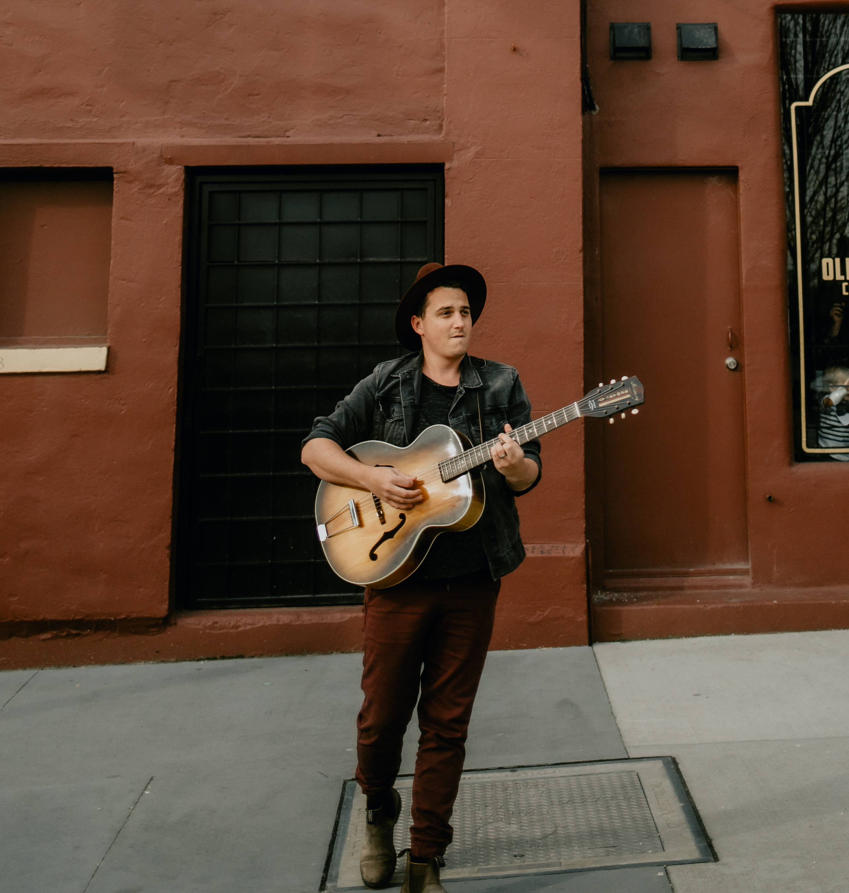
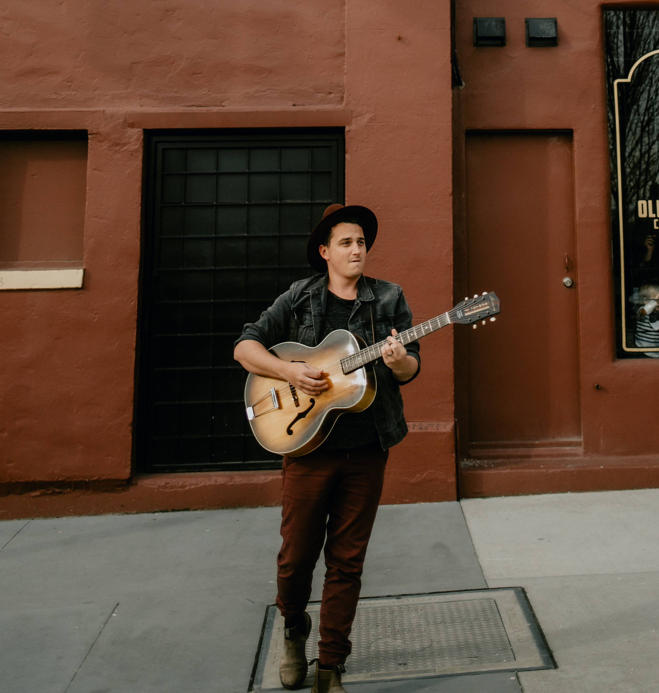

About
Josh (JP) has always been a part of music somehow. Growing up with two very musical sisters there was never a time when the three of them weren’t singing. It was until Josh learned to play the guitar when he really started to find this own sound. Over the last dozen years, Josh has delved into many different genres including punk, folk, blues, jazz, country, bluegrass, R&B, roots-rock, reggae, and funk.
Styles
Pick the best styles that fits your events needs
 
